Recipe- 簡介與工具軟體安裝
本單元將說明 網站前後端架構、Visual Studio安裝、專案建立與執行
網站前後端架構
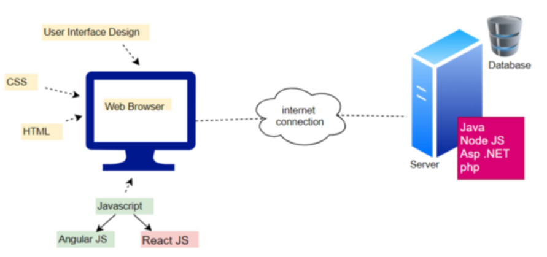
網站架構如上圖，涵蓋前端與後端設計，前端設計也稱為客戶端設計，如上圖左半部，利用HTML、CSS與JavaScript進行設計，著重於頁面設計與便用者之互動。後端設計則著重於伺服器的互動包含像提供處理程序的功能和邏輯與資料庫存取，後端技術是伺服器、應用程序和資料庫的組合，後端程式會編寫API或與資料庫互動的程式、建立程式庫、處理商業流程和資料架構等，雖然後端開發著重於網站的工作方式，但是仍須借助前端設計來呈現後端處理的結果。
課程介紹ASP.NET Core框架，ASP.NET Core是一個免費的開源 Web框架並繼承ASP.NET，它由微軟負責開發並維護。ASP.NET Core是一個模組化框架，可在完整的.NET Framework、Windows和跨平台 .NET 上運行。不同於微軟ASP.NET架構，ASP.NET Core最大的優勢為開源與誇平台(支援Windows、MacOS與Linux)，而ASP.NET僅用於開發Windows平台Web應用。
Visual Studio安裝
課程使用微軟Visual Studio community版本，使用者可至官網下載最新版本，軟體下載與安裝步驟如下：
1. 下載軟體-點選下載Visual Studio(請下載最新版本)
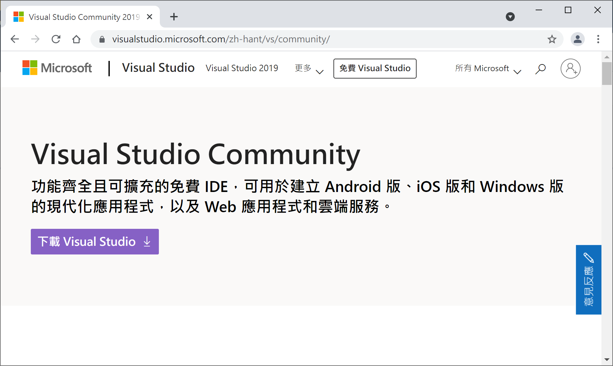
2. 安裝軟體-下載後執行並點選繼續
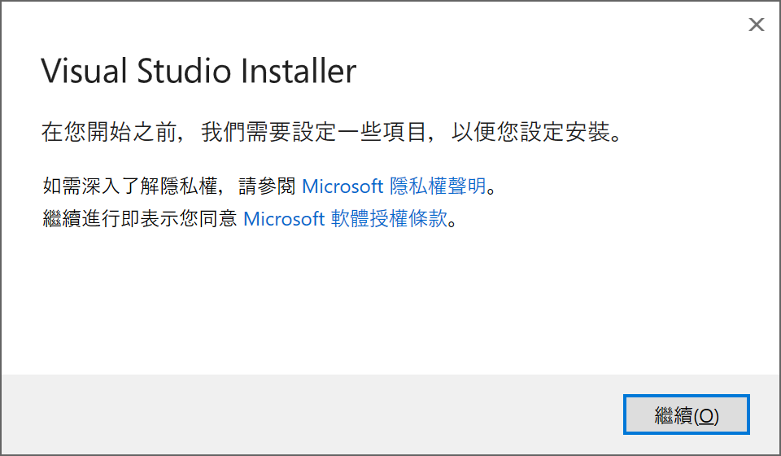
3. 安裝模組-選擇 ASP.NET與網頁程式開發、資料儲存與處理 後點選安裝
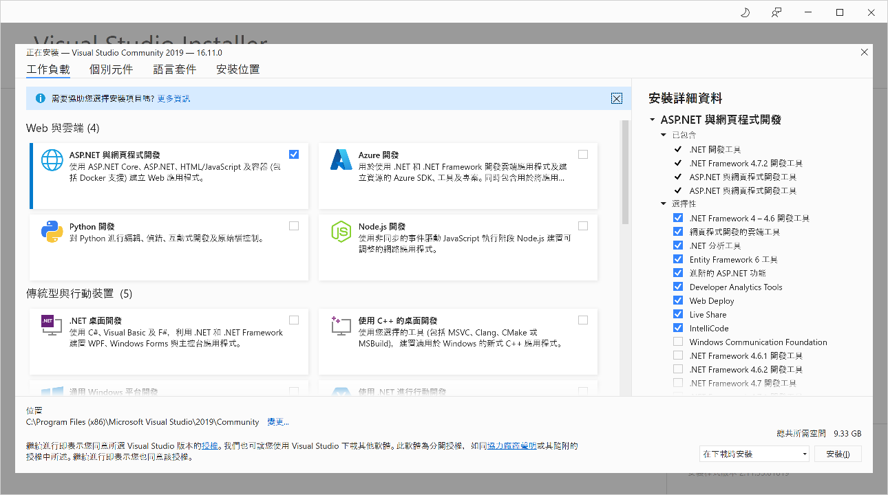
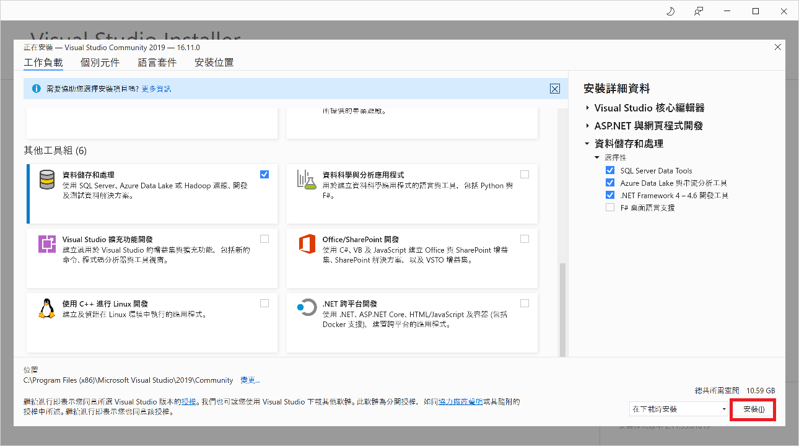
4. 安裝.NET SDK
請至官網下載對應平台最新版.NET SDK x64並安裝。(請注意：.Net 6僅支援Visual Studio 2022。)
5. 軟體註冊
Visual Studio Communinity為免費軟體，但需要註冊才能免除30天試用限制，使用者如有微軟帳號，請直接用微軟帳號登入即可，如果沒有，請自行建立。
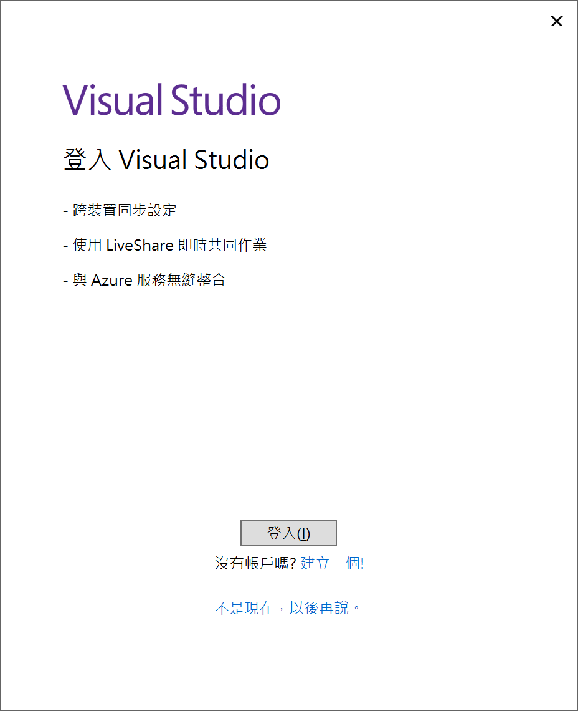
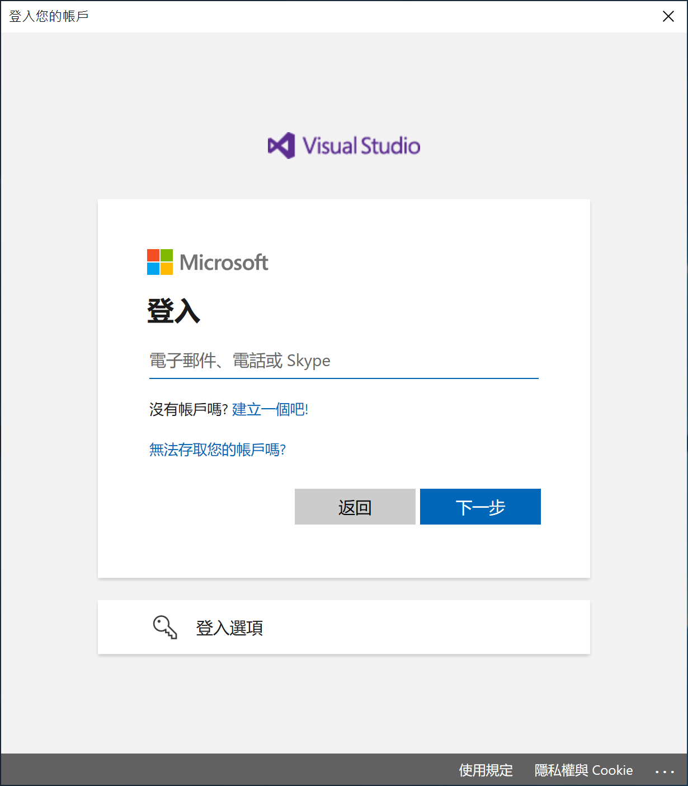
專案建立與執行
Visual Studio Communinity為免費軟體，但需要註冊才能免除30天試用限制，使用者如有微軟帳號，請直接用微軟帳號登入即可，如果沒有，請自行建立。
- 請開啟Visual Studio(至少為2019版並更新至最新版本)後選擇建立新的專案 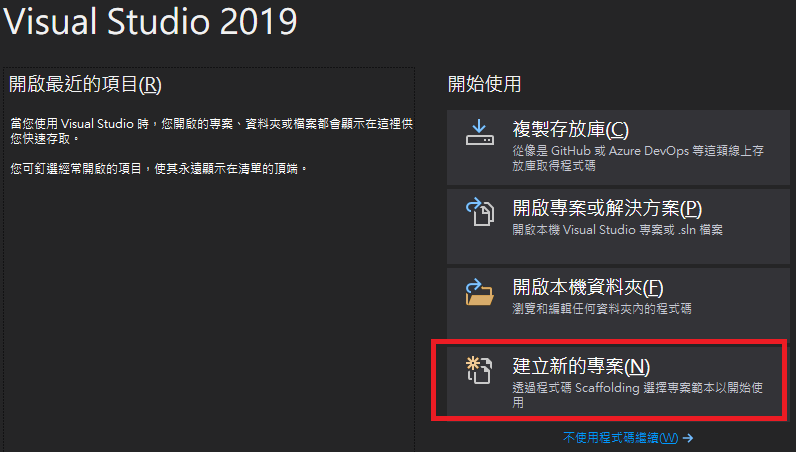
- 請選擇 ASP.NET Core Web應用程式(Model-View-Controller) 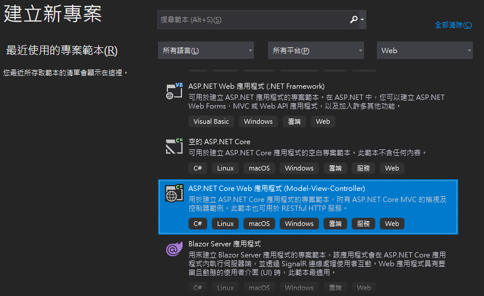
- 設定專案名稱及位置 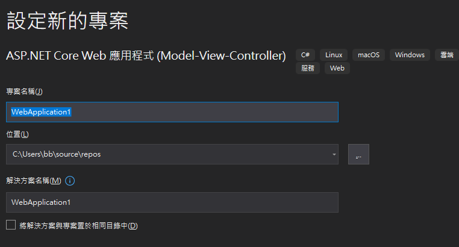
- 目標Framework請設定系統安裝 .NET SDK版本(例如6.0)並取消勾選HTTPS後按建立 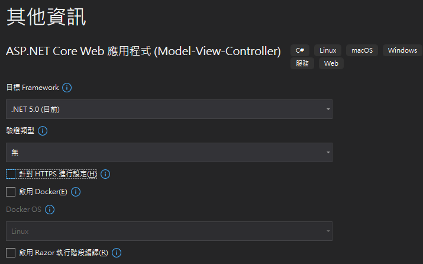